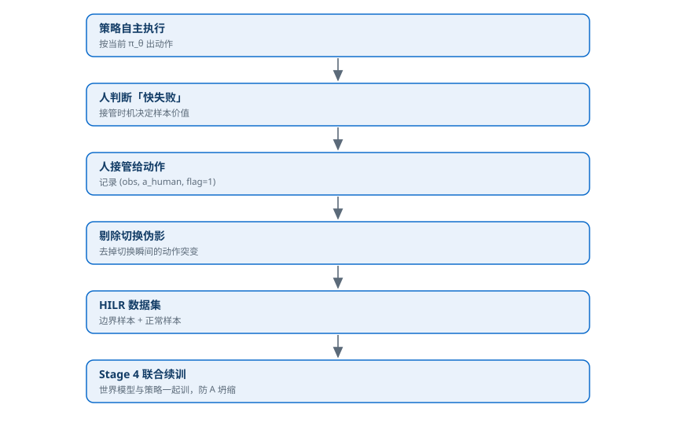

策略自主执行 + 人只在快失败时接管 · 剔除切换边界伪影 · 数据用于联合续训
HILR（Human-in-the-Loop Rollout）是 GigaBrain RAMP 的 Stage 3：机器人自己跑，人只在「即将失败」时接管；采到的边界样本用于 Stage 4 联合续训。它属于 DAgger 家族的工程化。
| 项 | 值 |
|---|---|
| 输入 | 策略、环境、人类接管策略 |
| 输出 | 带干预标记的轨迹（已剔除切换伪影） |
| 采集位置 | 策略快失败的边界样本 |
| 用途 | Stage 4 世界模型+策略联合续训；掩码 p=0.2 |
| 层级 | 内容 |
|---|---|
| L1 计算理论 | 采集「策略会失败」的边界数据，用最少人工标注换最大信息量；约束：人工成本高、切换瞬间动作突变。 |
| L2 表征与算法 | 表征：带干预标记的轨迹 (obs, a, flag)；算法：自主执行 + 人接管 + 去伪影。 |
| L3 实现 | scrub 去边界；Stage 4 与世界模型联合续训。 |

物理：只采「机器人不会、人会」的边界；切换瞬间动作会突变，必须剔除，否则策略学到不连续动作。
物理：人机接力 rollout：自主执行 + 人工纠正 + 去伪影。
物理：在 HILR 数据上做行为克隆；物理：在「机器人会失败的边界」上更像人。
物理：世界模型与策略联合续训；物理：价值判断与策略行为保持同步，防优势塌缩。
依 GigaBrain §3.2.2 Stage 3–4 重建；无官方代码。
def hilr_episode(policy, env, human):
# 物理：策略自主跑；人只在快失败时接管
traj, obs, done = [], env.reset(), False
while not done:
a = policy.act(obs) # 策略动作
flag = 0
if human.wants_control(obs): # 人判断：这一步会失败
a, flag = human.act(obs), 1 # 人给纠正动作
traj.append((obs, a, flag)) # 记录状态-动作-是否干预
obs, done = env.step(a)
return scrub(traj) # 剔除切换边界伪影
def joint_continue(W, pi, D_hilr, D_base):
# 物理：只训策略会让价值估计偏，必须同步续训世界模型
for batch in mix(D_hilr, D_base): # 混合比例论文未给
W.update(world_model_step(W, batch))
pi.update(policy_loss(pi, batch))返回 方法精读 Wiki 索引 ｜ 博客：VLA/WAM 的 RL 后训练实现版